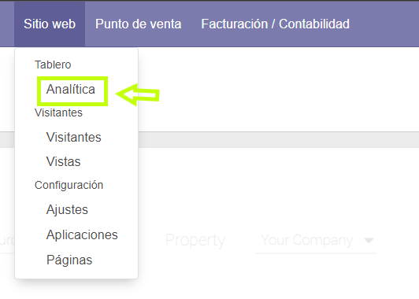
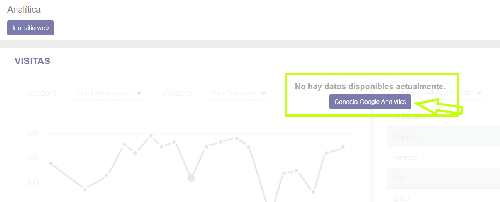
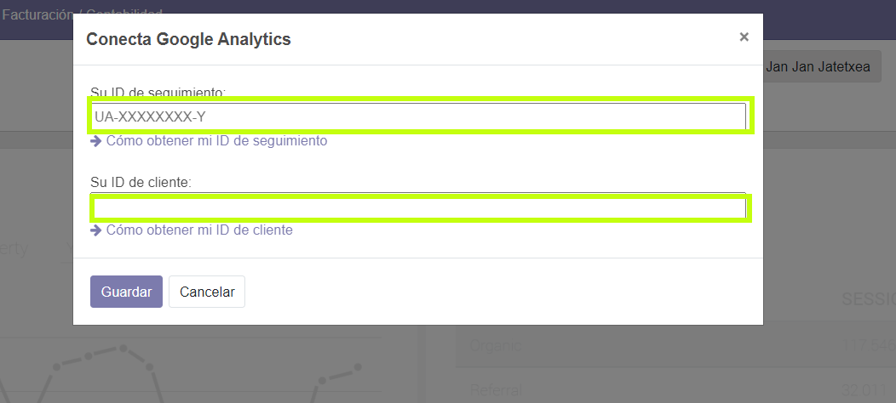
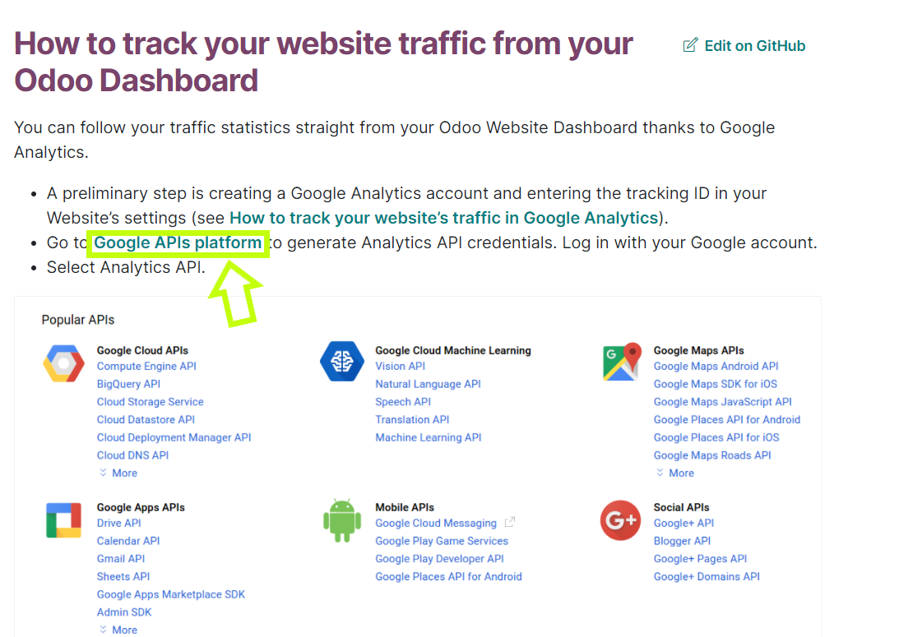

Google analytics
Cómo rastrear el tráfico del sitio web en Google Analytics; lo primero sera entrar en el apartado de analítica dentro de sitio web.

Despues tenemos que clicar en el boton de conectar google analytics

Tenemos que introducir la id de seguimiento y la id de cliente.

Para conseguir la id de seguimiento tenemos que crear una cuenta de google analytics y conseguiremos la id.

Para conseguir la API tenemos que entrar a la pagina de Google API y le daremos a generar un codigo API.
